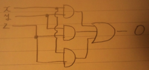
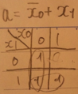
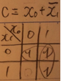
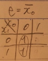
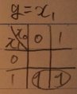
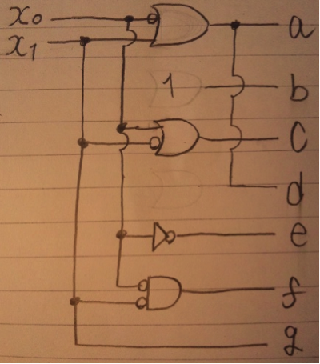

スパニング木、スパニングツリー、極大木とも言う。
あるグラフの全ての頂点と、そのグラフを構成する辺の一部分のみで構成される木のこと。木なので、閉路があってはならない。完全グラフから、閉路を構成する辺を取り除いたものとも言える。
辺に重み定義されているグラフにおいて、全ての頂点を含む木で辺の重みが最小のものを、そのグラフの最小全域木と呼ぶ。閉路を含まない。
・クラスカル法
１，グラフの各頂点がそれぞれの木に属する森Fを生成する。
２，グラフの辺の集合をEとする。
３，Eから最も重みの小さい辺eを取り出し、削除する。その際にeに繋がる２つの頂点が別々の木に属しているならば、辺eを森Fに加え、２つの木を連結して一つの木にする。
４，３をEが空集合になるまで繰り返す。
５，最終的にFが最小全域木となる。
コスト：２９
※グラフMは問題のもの流用のため載せられず。
ページング方式では、ページテーブルによって論理アドレスを物理アドレスに変換する。ページテーブルは論理アドレスをもとに主記憶装置の物理アドレスか補助記憶装置の物理アドレスを指し示し、目的とするデータの属するページが補助記憶装置上にある場合はページフォールトであり、主記憶にスワップインした後に改めてページを読み込む。また、ページテーブルにアクセスする前に、アクセスしたページの履歴情報をキャッシュメモリ内に保持しているTLBで検索することによりアクセスの高速化が望める。TLBは時間的局所性、空間的局所性の性質からして適していると言える。
・内部フラグメンテーション
メモリ管理をブロック単位で行う場合に発生する。ある３．５ブロックの容量を必要とするデータをメモリ上に置く際には４ブロックを確保して格納する。しかしながら４ブロック目は０．５ブロック、すなわち半分しか使われておらず、半ブロック分は無駄な空きが生じていることになる。これを内部フラグメンテーションと言う。
・外部フラグメンテーション
メモリ管理を可変長で管理する際に発生する。メモリ上で領域の確保と開放を繰り返すとメモリ上に飛び飛びの大小様々な未割り当て領域が発生する。この時、小さい未割り当て領域が過度にあると、それよりも大きい領域を必要とする割り当て要求が来た場合に割り当てる領域が出来ない状況が発生する。これを外部フラグメンテーションと言う。メモリコンパクションによって解決可能であるが、そのために掛かるコストは無視出来ない。
・同一にする場合
同一の論理記憶空間にあるため、複数のタスク間で共通資源を持つことが可能であり、タスク同士で協調して一つの処理を行うことが可能。資源の排他制御が必要。また、メモリ領域を多く必要とするようなタスクの場合は互いに論理アドレス空間を圧迫し合う可能性がある。
・分離する場合
上記で述べたアクセスの制限、データの保護をする必要が無く、一つのタスクが論理アドレス分の領域を使用することが出来るが、他のタスクと共通領域を持つことが出来ない。他のタスクの論理記憶空間上にあるデータを他のタスクが必要とする場合は、自分の論理記憶空間上にコピーする手間（プロセス間通信）が掛かってしまう。しかしプロセス間通信自体が排他制御の機能を持つためにそのための機構は不要となり管理が楽。
初期条件として、
out(HEAD,0)
out(LAST,0)
が実行されているものとする。
def enqueue (d:data) in(LAST,i:integer) out(QUEUE,d,i+1) out(LAST,i+1) end |
def dequeue()
in(HEAD, j:integer)
read(LAST, i:integer > j)
in(QUEUE,d:data,j)
out(HEAD,j+1)
return d
end
|
enqueueによって引数のデータを最後尾を示すLASTの位置に書き込む。
dequeueは、LASTが先頭位置を示すHEADよりも大きいことを確認後にQUEUEからHEADの位置のデータを読み出し、削除する。
初期設定として out(MUTEX,1)が実行されているものとする。
def mutex(){
in(MUTEX,i:integer >0)
～クリティカルセクション～
out(MUTEX,1)
}
MUTEXの読み込みをクリティカルセクション(CS)の実行の条件とすることにより、CS実行中のプロセスが処理を終了しない限り、他のプロセスをMUTEXを確保するためにブロック状態となるため、排他制御が実現出来る。
セマフォア構造体による排他制御を実現したプロセス間通信方式がある。セマフォアはそれぞれセマフォア名、セマフォア変数、待ち行列を持つ。プロセスはセマフォアを獲得してCS処理を行うか、獲得できない場合はセマフォアの待ち行列に入って待ち状態になる。CS処理を終えたプロセスはセマフォアを開放し、待ち行列にプロセスが存在する場合はそのプロセスを実行可能状態にさせ、存在しない場合はセマフォアを開放して処理を終える。
排他制御を容易に実現出来るが、セマフォアの占有、開放の責任がユーザーにあることが欠点である。
プリプロセッサが#で始まる命令を処理する。例としてC言語で
#include<math.c> という宣言があれば、プリプロセッサはコンパイラ処理の前にmath.cをソースコード上に展開する。これをプリプロセッサ展開と呼ぶ。
また、
#define filename data.txt
と書いておくと、この行以降のfilenameという文字列がコンパイル時に全てdata.txtに置換えられる。
マクロとは、プログラム中の文字列を特定の規則にしたがって置換することを言う。
関数呼び出し時には呼び出し元に戻ってくることを考えて基本的にはデータの退避処理とジャンプ処理のためにオーバーヘッドが発生するが、マクロに書き換えることでこのオーバーヘッドを無くすことが可能。
・f(g(y++))
y++のインクリメントが行われるのは関数のリターン後であるため、f(g(y++))は
f(g(y))
y++;
と同義。関数により算出された結果は、yがインクリメントされる前の値のものであるので、
g(y) = y + 1
f(y+1) = (y+1)*(y+1)
・F(G(y++))
対してマクロで計算を行うG(x)はg(x)関数とは違い、yがインクリメントされた値に１を加算することになるので、
G(y++) = (y++) + 1 = y + 2
F(y+2) = (y+2)*(y+2)
輻輳とは，ネットワークが非常に混みあっており，正常な通信ができない状況のことです。通信が始まった直後では，経路のどこが混雑しているかわかりません。そのときに大量のデータを送信すると，輻輳が起こる危険があります。それを避けるために，輻輳ウインドウを設定しておき，通信開始時は一度に送る量を少なくして，ホストＢから返されるウインドウサイズとを比較しながら，次第に増やしていく方法をスロースタートといいます。これは輻輳制御の一つであり、輻輳によってデータ伝送の信頼性が損なわれないために必要である。
スロースタートは、送信先から返されるウィンドウサイズと比較しながら、送信サイズを１から倍ずつウィンドウサイズを超えないところまで増加させていくアルゴリズム。
輻輳回避は、スロースタートで輻輳によるパケットの破棄が起こってしまった場合に使われる。最初はスロースタートと同様のアルゴリズムを使用するが、ウィンドウサイズの1/2を超えたところで、増加の単位を倍では無く、１とすることで輻輳を回避するアルゴリズム。
TCPは輻輳回避フェーズにおいて2つのパラメータを用いる．
AIMD( a, b )
a：増加パラメータ
b：減少パラメータ
aは1ACKごとにcwndの値をa増やす．
bはパケットロス時にcwndの値にbかける．
※輻輳ウィンドウサイズ cwnd
通常は a = 1 , b = 0.5
つまり１ずつ増え、失敗したら半分にする。
1→2→4→8→16→32→64
Ackを受信する度に上述のように送信サイズが増加するので、
100msec * 7 = 700msec で輻輳回避状態へ移行する。
転送サイズは1+2+4+8+16+32+64 = 127KBを送信済み。
1→2→4→8→16→32→64→65→66→67→68→69→70→71→72→73→74→75→76→27
およそ２秒？
3bit目（2^2）を否定してやるだけで他はそのまま出力すれば完成。
※多数決回路とは、n入力のうち過半数を超える時、つまりはn/2+1入力以上１の時に出力が１になる回路のことらしい
Oを出力として真理値表を作ると、
| x | y | z | O |
| 0 | 0 | 0 | 0 |
| 0 | 0 | 1 | 0 |
| 0 | 1 | 0 | 0 |
| 0 | 1 | 1 | 1 |
| 1 | 0 | 0 | 0 |
| 1 | 0 | 1 | 1 |
| 1 | 1 | 0 | 1 |
| 1 | 1 | 1 | 1 |
カルノー図で簡約化すると
O = (x*y)+(y*z)+(x*z)

| x1 | x0 | a | b | c | d | e | f | g |
| 0 | 0 | 1 | 1 | 1 | 1 | 1 | 1 | 0 |
| 0 | 1 | 0 | 1 | 1 | 0 | 0 | 0 | 0 |
| 1 | 0 | 1 | 1 | 0 | 1 | 1 | 0 | 1 |
| 1 | 1 | 1 | 1 | 1 | 1 | 0 | 0 | 1 |
aとdの出力は等しい。bの出力は入力に関わらず１。fが１になる入力は１通りなので簡約化は不可能。
以上より、a,c,e,gのみ簡約化すればよい。カルノー図を書くと、




